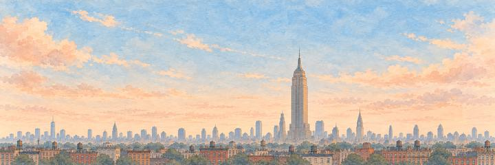
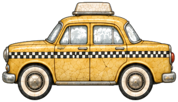

New York paper plane game
Fly between buildings taller than any tree I've climbed.
Climb early over the towers. Get past the taxi, then the Statue of Liberty.
From New Amsterdam
Dutch traders began New Amsterdam on the tip of Manhattan in 1625. The English seized it in 1664 and renamed it after the Duke of York. In 1898 Manhattan, Brooklyn, Queens, the Bronx and Staten Island joined into one city: today's New York.
“I'd walk the old Dutch streets of lower Manhattan.”
The landmarkThe 102-storey tower
The Empire State Building rose in just 410 days and opened on 1 May 1931. For about 40 years it was the tallest building in the world. Its spire was meant as a mooring mast for airships, but the winds up there were far too wild to tie one on.
Neighbourhoods
New York is the most populous city in the United States, with about 8.8 million people at the 2020 census. Brooklyn has the most people of its five boroughs, about 2.7 million. In upper Manhattan, Harlem began as a Dutch village in 1658 and takes its name from the city of Haarlem in the Netherlands. Further south, SoHo has the largest group of cast-iron buildings in the world.
The river and the harbour
Manhattan is an island, with the Hudson River to the west and the East River to the east. The East River is really a tidal strait, and its flow turns with the tides. When the Brooklyn Bridge opened across it on 24 May 1883, it was the first steel-wire suspension bridge. In the harbour, the Statue of Liberty, a gift from France, was dedicated on 28 October 1886. It has been a UNESCO World Heritage Site since 1984.
The skyline
In 1916 New York passed the first citywide zoning law in the United States. Tall buildings had to step back as they rose, which gave many towers of the 1920s and 1930s their stepped "wedding cake" shape. The Chrysler Building, with its stainless steel crown, was the world's tallest building for 11 months, from 1930 to 1931. Today One World Trade Center, opened on 3 November 2014, is the tallest building in the Western Hemisphere. Its height of 1,776 feet, about 541 metres, recalls the year of the Declaration of Independence.
When to see it
Watch at dusk, as the towers light up. Since 2012 the top of the Empire State Building has used LED lights that can show more than 16 million colours.
Who keeps the wish in New York.
An Elite wakes first; the Boss guards the wish itself. Hit their weak points for a BONK!, land the last blow for a KO!, and each one grins and takes a bow.
-
The Elite


The Taxi
Always in a hurry · Keeper of Times Square
New York's first motor cabs, in 1907, were red and green. Yellow came from Chicago, where John Hertz painted his Yellow Cab fleet after, the story goes, a University of Chicago study named yellow the easiest colour to spot. Some historians doubt the study. In 1967 New York made yellow the law for its licensed cabs.
The taxi's roof light flickers on. The taxi skids, honks twice and keeps going. The taxi pulls over and switches off its roof light.
“I'd hail one and ask for the Empire State.”
-
The Boss
The Statue of Liberty
Holding up that torch since 1886 · Keeper of the Harbour
She crossed the Atlantic in 1885 in 214 crates, 350 pieces packed aboard the French ship Isère, a gift from the people of France. Gustave Eiffel designed the iron skeleton inside her. At her 1886 unveiling she shone copper-bright; salt air and rain turned her green, a patina complete about twenty years later.
The Statue of Liberty lowers her torch, just a little. She rocks on her pedestal but keeps the torch up. She bows her head and lowers the torch, still lit.
“I'd wave back at her from the ferry.”
New York cleared. The buildings really do touch the clouds.
- The taxi honked the whole time. Then it pulled over.
- She held that torch up the whole time.
The plane reaches New York from Paris. Clear it and the map opens the way to Rio de Janeiro, London and Toronto. Its own plane look is Autumn Leaves, a trail look.